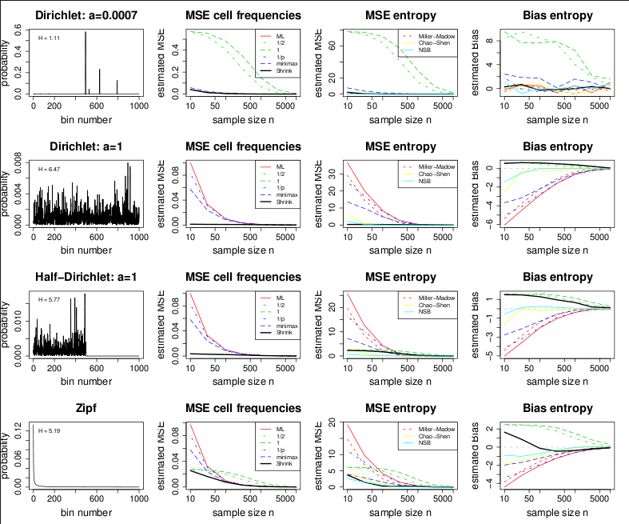

This package implements various estimators of entropy for discrete random variables, including the shrinkage estimator by Hausser and Strimmer (2009), the maximum likelihood and the Millow-Madow estimator, various Bayesian estimators, and the Chao-Shen estimator. It also offers an R interface to the NSB estimator. Furthermore, the package provides functions for estimating the Kullback-Leibler divergence, the chi-squared divergence, mutual information, and the chi-squared divergence of independence. It also computes the G statistic and the chi-squared statistic and corresponding p-values. Furthermore, there are functions for discretizing continuous random variables.
Current Version: 1.3.1
Authors: Jean Hausser and Korbinian Strimmer.
Documentation and Installation:
Quick install: enter at the R console: install.packages("entropy")- Manual (pdf file) and release history.
- Download of entropy version 1.3.1 source package.
- Archive of previous versions of entropy.
- Licensed under the GNU GPL version 3 (or any later version).
Additional Information and Relevant Papers:
- A comparison of various entropy estimators estimators implemented
in the "entropy" package:
 - Hausser, J., and K. Strimmer. 2009. Entropy inference and the James-Stein estimator, with application to nonlinear gene association networks. J. Mach. Learn. Res. 10: 1469-1484. (arXiv:0811.3579)